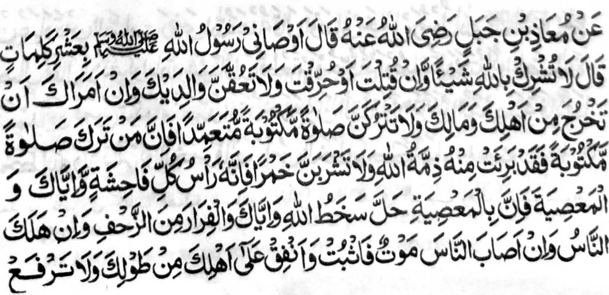
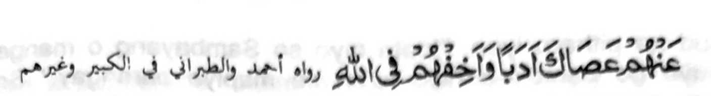

HADITH- III


Miya-aloy o Moadh Bin Jabal (Radhiallaho Anho) a pitharo iyan,
"inosiyatan ako o Rasulollah (Sallallaho 'Alaihi Wasallam) sa
sapolo a wasiyat. Pitharo iyan, 'Obangka sakoton so Allah sa maito bo
mapiya bono-onka, odi na totongenka, go obangka sopaka so mbala-a lokes
ka apiya isogo iran reka so kabelagangka ko karoma ngka go so manga
tamok ka, go obangka bagaken so manga paliyogat a Sambayang thibaba ka
mata-an a sa tao a ibagak iyan so manga paliyogat a Sambayang thibaba na
sabenar a miyada sekaniyan sa siyap o Allah, go oba ka inom sa arak ka
mata-an a sekaniyan na olo o manga piyakasisingay, go oba ka nggola-ola
sa ma-asiya ka mata-an a pekhisabap ko manga sopak so rarangit o Allah,
go obangka palago-i so rido-ai (o Islam) apiya so manga tao (a ped ka)
na palaya miyamatay, go obangka palago-i so inged a miyasogat a tibelek,
go nggasto angka ko ta-alok reka so khagagangka, go tibaba ka sa badas
ko ta-alok reka a tapa-os ago pangangalek kiran aniran kaleken so
Allah.
Ped a siyabot sangka-iya Hadith, a oba tano panganogoni so badas ko
kapephi-isi tano ko manga wata tano ka oba siran kada-i sa kasanggila na
manggola-ola iran so langon o kabaya iran. Pekhasalak a kailangan tano
den so kaosar o badas. Tanto a piyaka-rata-rata sa ginawa a sabap ko
gagao tano kiran na da tano osara so badas si-i sa paganay pen, na amay
ka miya lalong so manga wata tano na penggora-ok tano bo ago
mini-pagata-at tano. So kapanganogoni ko badas ka aden malalong so manga
wata tano na kena den o ba oto gagao. Antawa-a i kharawan niyan meren so
kapagaberi-i ko wata iyan o Doktor sabap bo sa kagiya khasakitan so
wata. So Rasulollah (Sallallaho ’Alaihi Wasallam) na miyapanothol a
oman-oman niyan den tharo-on, "Paliyogat niyo ko manga wata iyo so
Sambayang ko kira-ot o omor iran sa pito ragon, na danegen niyo kiran o
bagaken niran ko kira-ot o omor iran sa sapolo ragon." So Abdullah
bin Mas-ud na pitharo iyan, "lpata niyo so Sambayang o manga wata iyo
go pamola-a niyo kiran so mapiya parangay." So Luqman a maongangen
na lalayon so gi-i niyan katharo-a sa, "So kaosar o badas ko wata
na tanto a mala-i gona sa lagid sa kala-i gona o ig si-i ko
babasoka." Miyapanothol a miya-aloy o Rasulollah (Sallallaho
'Alaihi Wasallam), "So tao ko masa a phagosiyatan niyan so manga wata iyan na pephakakowa sa balas pho-on ko
Allah sa lebi a di so khakowa niyan a balas opama ka nggasto sa pito ka
pansing a pangenengken sa lalan ko Allah." Si-i ko isa a Hadith na
pitharo o Rasulollah (Sallallaho 'Alaihi Wasallam) a, "Ikalimo o
Allah so tao a tomitibaba sa badas a bibitinen niyan ko walay niyan a
paka-inengka iyan ko manga ta-alok iyan" Si-i pen ko isa a masa na
pitharo iyan, "Dapen a mapiya a khibegay o ama ko manga wata iyan a
baniyan kalawani so minipangenda-o niyan kiran a mapiya a
parangay."